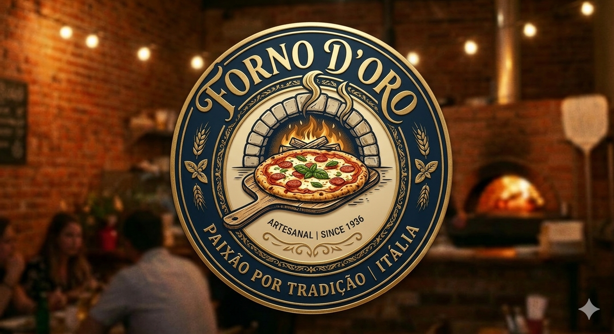

Pizza Artesanal da Alma Italiana
Trabalhamos com a produção de pizzas feitas na hora, utilizando ingredientes de qualidade e receitas cuidadosamente elaboradas. Como delivery, nossa missão é proporcionar praticidade sem abrir mão do sabor, entregando pizzas irresistíveis com rapidez e eficiência.

Por que Nos Escolher?
Nossas pizzas são feitas com ingredientes frescos, massas artesanais e aquele cuidado especial em cada detalhe. Aqui você encontra sabor de verdade, atendimento acolhedor e combinações que agradam todos os gostos. Escolher a gente é garantir uma experiência deliciosa, do primeiro ao último pedaço.